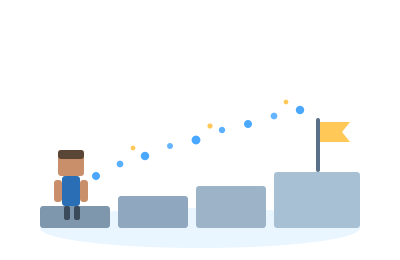

Players¶
Cobblestone computes a route to a destination and draws it as a particle trail. No client modifications are required.
| Command | Alias | Purpose |
|---|---|---|
/navigate |
/nav |
Navigate to a destination. |
/cobblestone |
/stone |
Manage saved locations and trips. |
Quick start¶
Save your current position:
Navigate back to it from anywhere:
Cobblestone reports Searching for a route..., then Success! once a route is found. Hover over
the message to see the search time and estimated travel time. The trip ends automatically when you
arrive within two blocks of the destination.
The trail¶
The trail renders only the next segment of the route, brightest at the point to head for next.
- Straying. If you leave the trail, a short guide path is drawn back to it. Beyond 32 blocks (by default), the route is recomputed from your current position.
- Action steps. Some steps require an action: opening a door, placing a boat, mounting a horse,
entering a portal, or running a command. Cobblestone highlights the location and sends a
message. Command prompts, such as
Run /warp market., can be clicked. - Ending. A trip ends on arrival, on
/stone cancel, or on disconnect. Death does not end a trip.
Destinations¶
Type /nav and press Tab to list the destinations available to you. The list depends on the
plugins installed on the server.
Saved locations¶
/nav home # a personal location
/nav location private home # the same, fully qualified
/nav location global spawn # a server-wide location
Death location¶
Your most recent death location. Admins may disable this destination.
Players¶
Online players only. The route is recomputed periodically as the target moves.
Worlds¶
Routes through a known entry point, typically a portal that Cobblestone has observed in use.
Integrations¶
Available only when the corresponding integration is installed:
/nav town riverwood home # Towny: town spawn
/nav town riverwood outpost north # Towny: outpost
/nav npc Blacksmith # Citizens: NPC
/nav home cabin # EssentialsX: home
/nav spawn # EssentialsX: spawn
/nav quest lostlantern # Quests, BeautyQuests: current objective
/nav compass tower # BetonQuest: quest compass target
Addresses¶
Every destination has a full address, such as cobblestone location private home. Leading words
may be omitted as long as the remainder identifies exactly one destination:
The final word is always required. Some levels, such as town and NPC names, are marked strict by their provider and are also required.
If the input matches more than one destination, the candidates are listed:
Tab completion is suppressed when there are too many candidates. Type a few more characters and press Tab again.
Flags¶
Flags follow the destination and may be combined.
| Flag | Effect |
|---|---|
-live / -no-live |
Enable or disable periodic route recomputation. Enabled by default only for moving targets. |
-no-<mode> |
Exclude a travel mode, e.g. -no-swim. |
-no-mode <mode> |
Long form of the above. |
-no-world <world> |
Exclude a world, e.g. minecraft:the_nether. |
-no-dimension <dimension> |
Exclude a dimension, e.g. the_end. |
-navigator <id> |
Select a navigator. The default is trail. |
Travel modes: walk, swim, fly, mine, fall, climb, boat, horse, door. The fly
mode is used only if you are able to fly, and mine only where you may break blocks.
Saved locations¶
/stone location set <name> # save the current position
/stone location unset <name> # delete a location
/stone location list # list personal and global locations
/stone loc is an alias for /stone location. Names are single words and are scoped to each
player. Where a personal and a global location share a name, use location private <name> or
location global <name>.
Trips¶
Up to three trips may run at once by default.
/stone trips # list active trips
/stone cancel <id> # cancel one trip
/stone cancel all # cancel all trips and pending searches
/stone cancel with no argument is equivalent to all.
Errors¶
| Message | Cause |
|---|---|
There is no route to that destination. |
No traversable route exists. |
The search ran out of resources before finding a route. |
The search reached its cell limit. |
The search took too long and was stopped. |
The search reached its time limit. |
No destination matches ... |
No destination has that name. |
That destination is ambiguous; be more specific: ... |
Add a word from the full address. |
You already have too many active trips; cancel one first. |
Cancel a trip with /stone cancel. |
You don't have permission to do that. |
The destination or navigator is restricted. |
Search limits are set by the server. See Configuration.